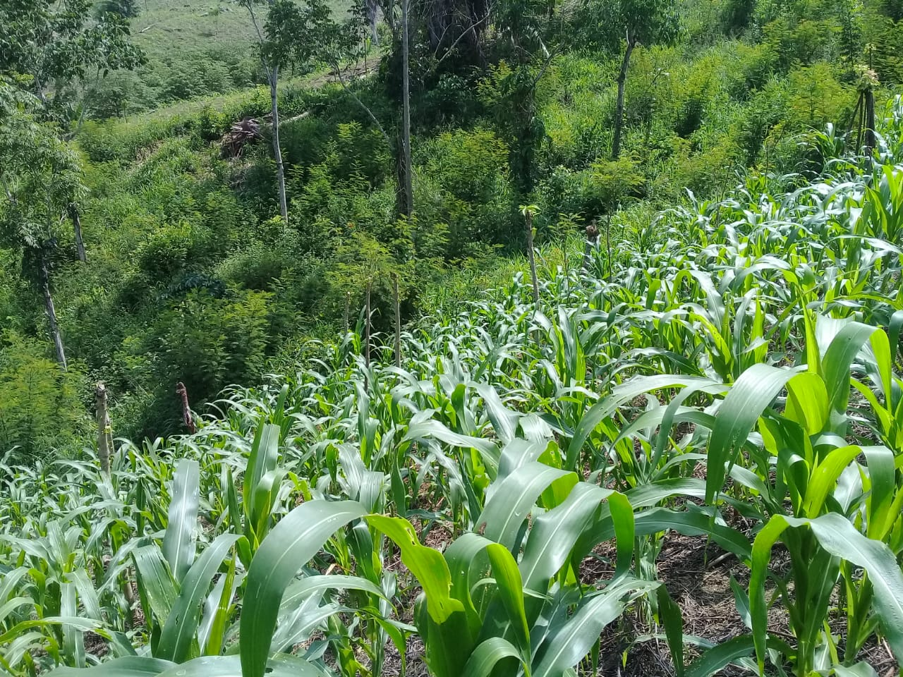
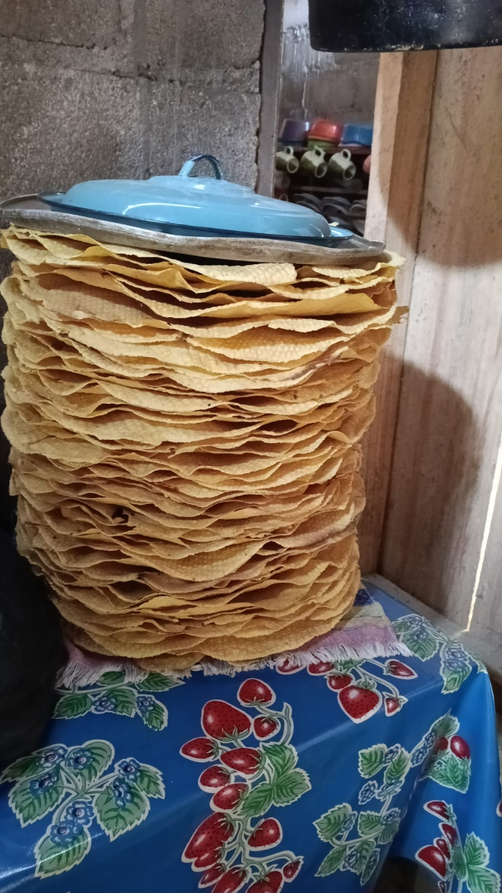

La agricultura y el cultivo de alimentos.

La mayoría de los habitantes se dedican a la siembra, el cultivo y la cosecha de diferentes tipos de productos vegetales y frutales que ofrece la región. Estos productos normalmente se utilizan para el consumo diario de las familias, mientras que otras personas se dedican a venderlos a los habitantes que no tienen la posibilidad de sembrar sus propios alimentos.

Uno de los principales alimentos que se siembran en la comunidad es el maíz, ya que existe la costumbre de acompañar las comidas con tortillas (totopos y tlayudas). Las mujeres son las que participan en la elaboración de las tortillas, que utilizan ya sea para el consumo de sus propias familias o para venderlos a otros hogares que no cuentan con el tiempo suficiente para preparar sus propias tortillas.